O sabor inesquecível do afeto verdadeiro em cada fatia.
Tortas feitas com nata fresca, recheios fartos e receitas tradicionais da Dira. Da clássica Marta Rocha às tortas temáticas personalizadas, tornamos sua festa doce e inesquecível.
Feitas sob encomenda com afeto e dedicação, nata fresca e frutas selecionadas para o seu momento especial em Porto Alegre.
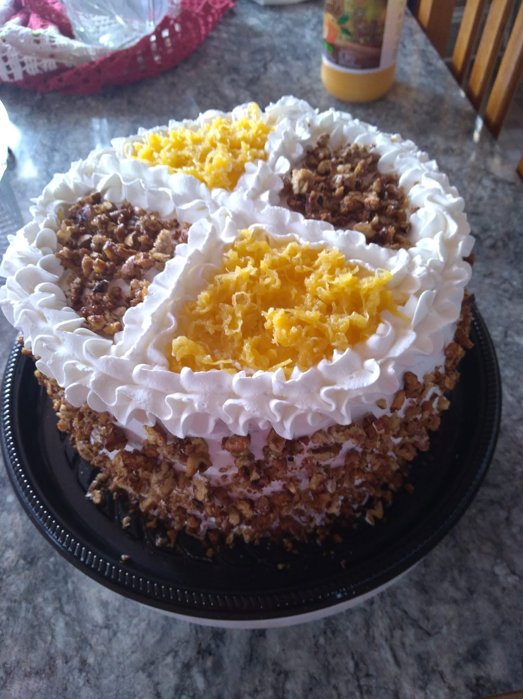
Monte sua Torta & Calcule o Valor
Escolha o formato, tamanho e recheio favorito. Seu pedido já sai prontinho e formatado direto para o WhatsApp da Dira!
Sua Torta dos Sonhos
Não sabe qual tamanho escolher para seus convidados?
Digite quantos convidados você terá e nós indicamos a torta mais adequada para ninguém passar vontade!
Sobra com folga para repetir e servir com elegância.
Tortas reais feitas com carinho pela Dira
Sem fotos de internet ou ilustrações artificiais. Todas as tortas abaixo foram feitas e entregues para clientes de Porto Alegre:
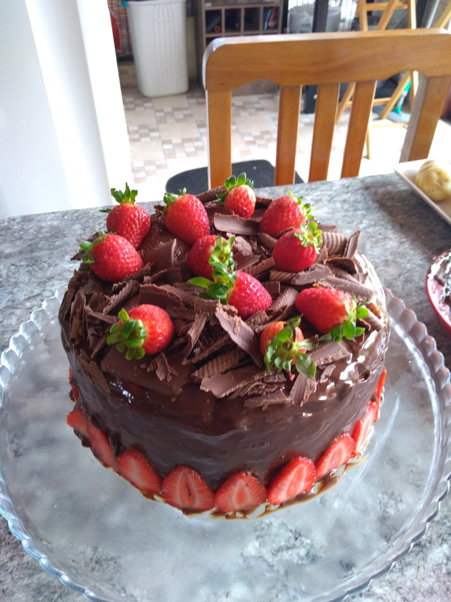
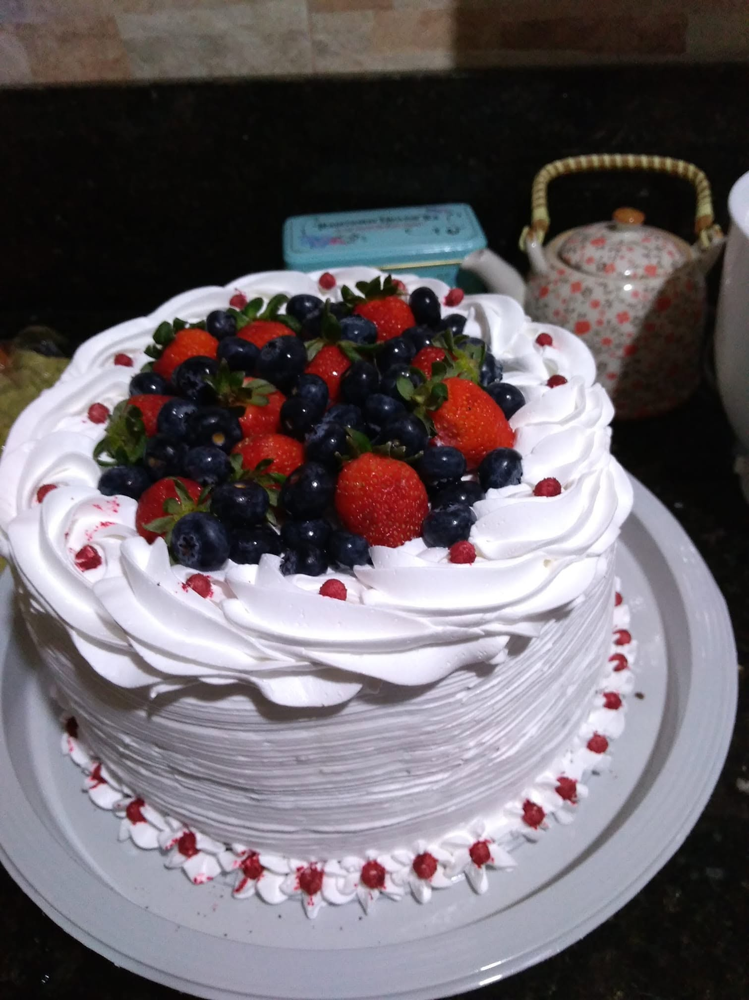
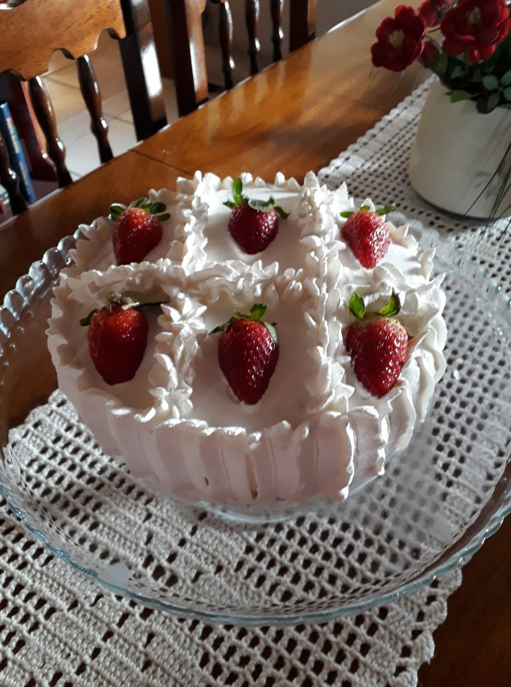
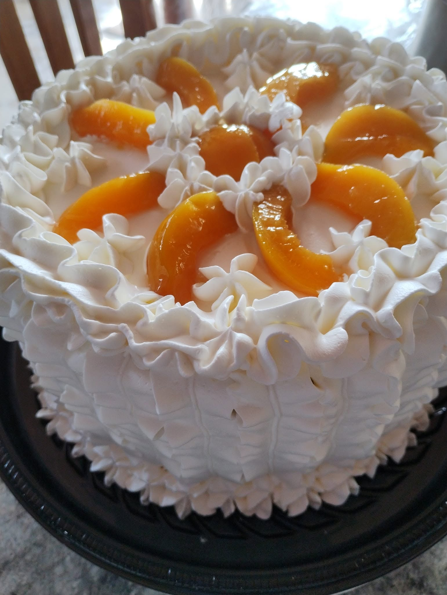
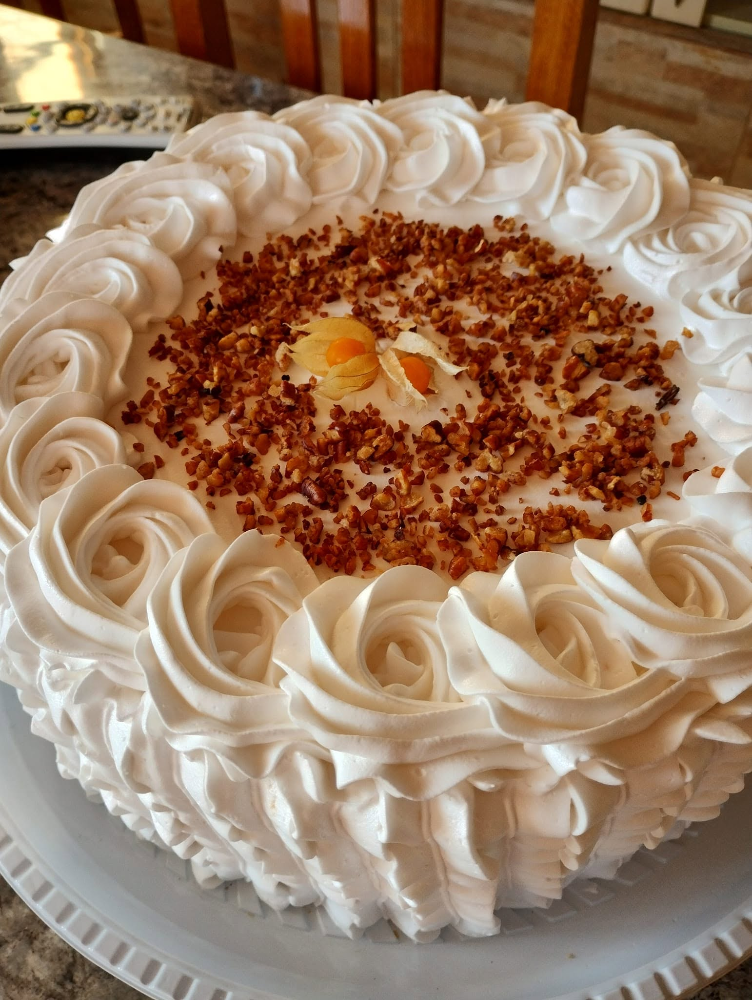
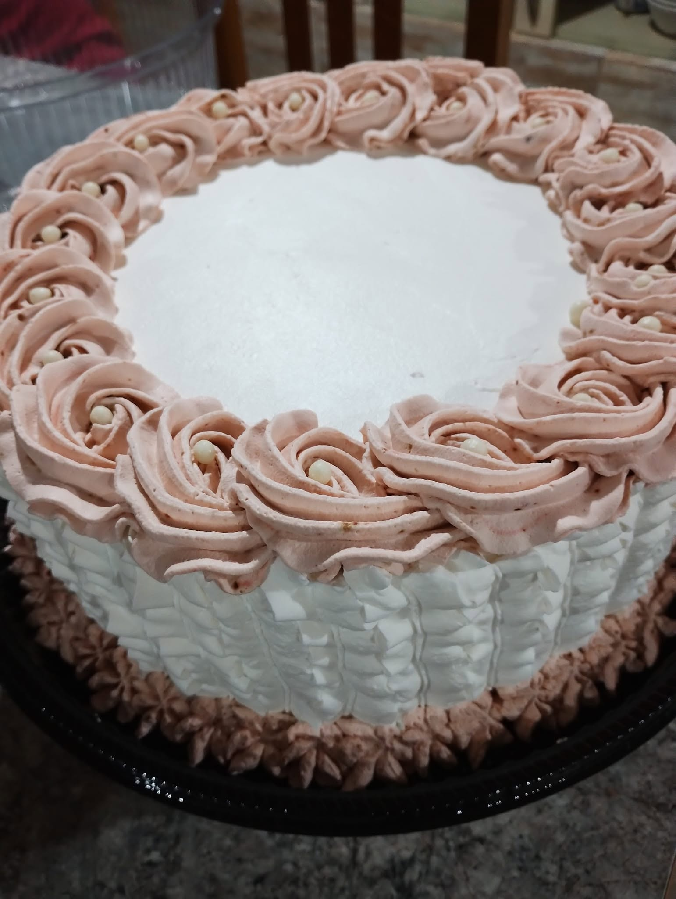
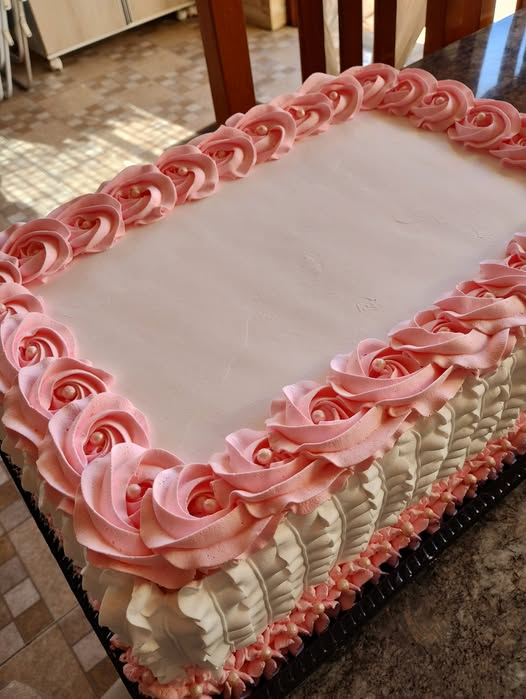
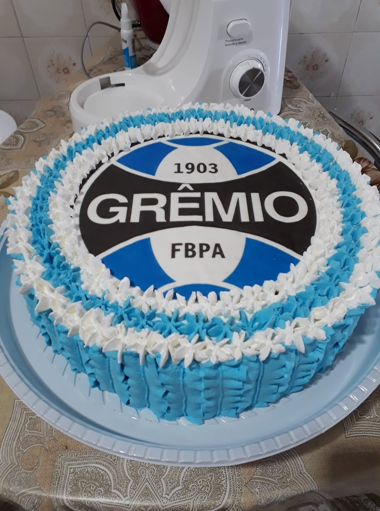
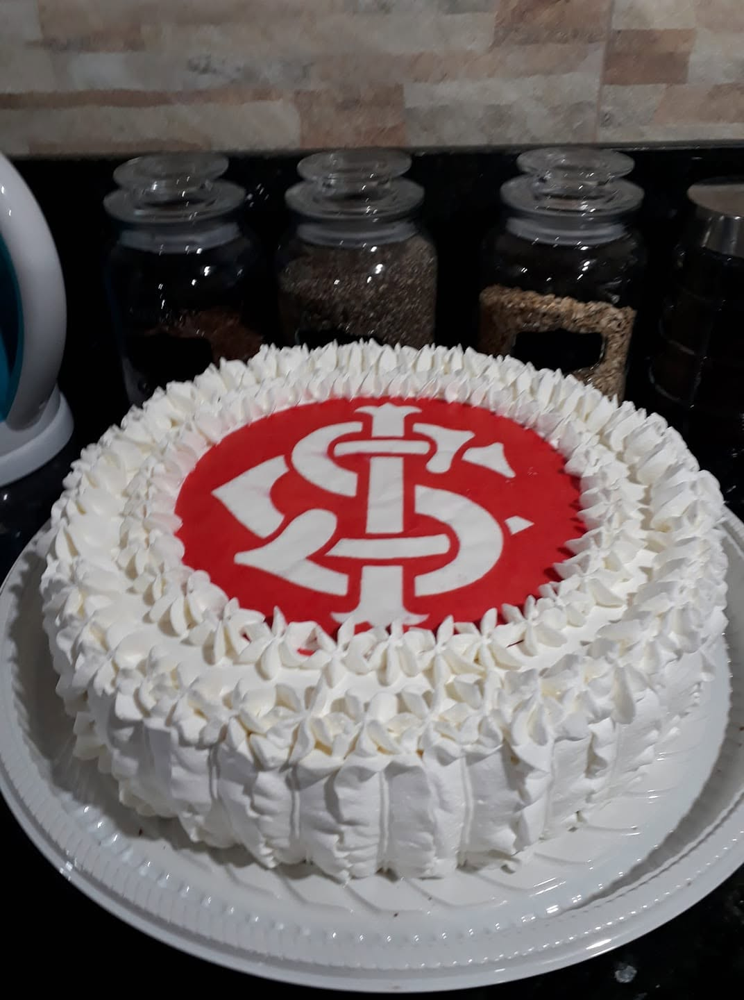
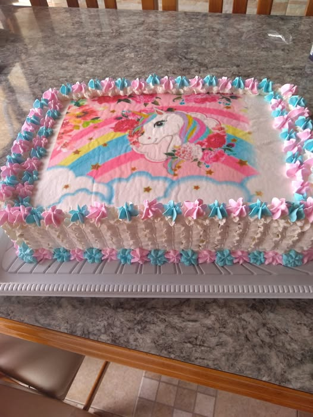
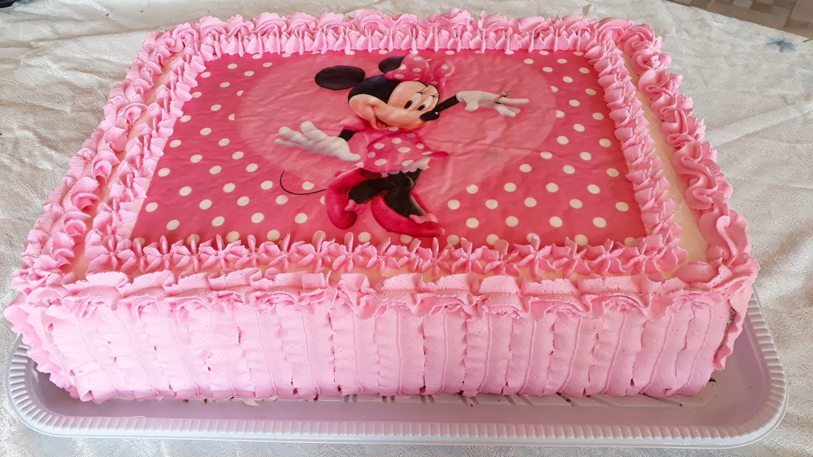
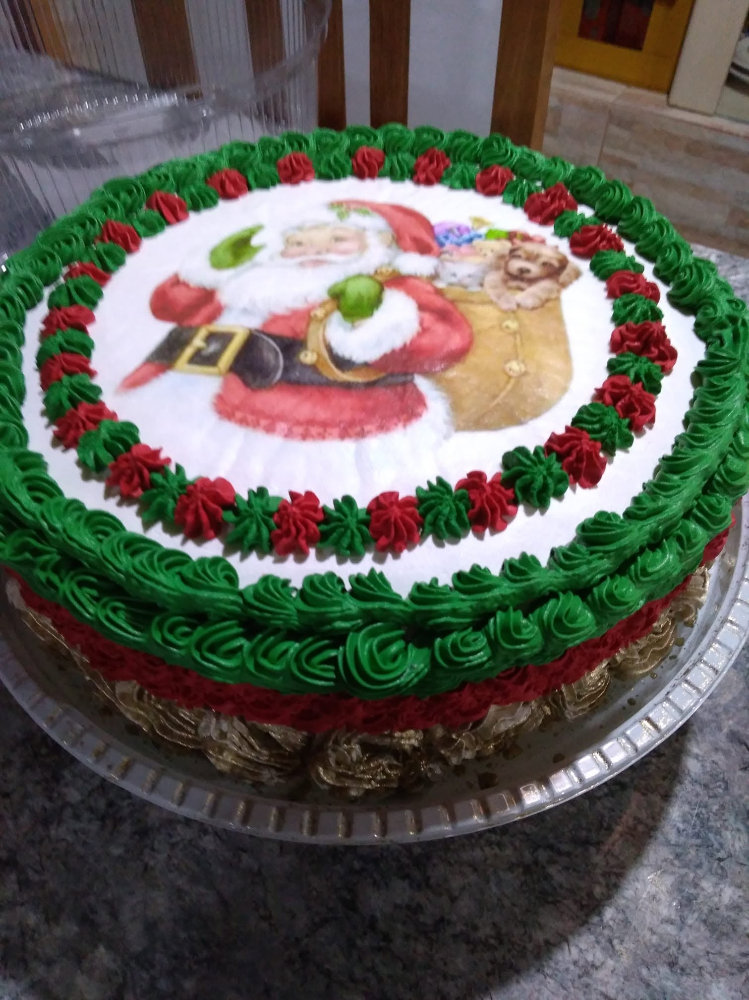
Gostou de algum modelo ou quer um tema personalizado para a sua data especial?
Conversar com a Dira no WhatsAppO padrão que faz nossos clientes voltarem sempre
Mais do que vender bolos, entregamos o momento mais esperado da sua festa com pontualidade e afeto.
100% Artesanal de Verdade
Massas batidas com ovos frescos, pão de ló leve e fofinho. Nunca usamos pré-misturas químicas ou conservantes industriais.
Recheios Fartos de Ponta a Ponta
Chega de bolo com recheio só no meio! Cada fatia tem camadas fartas de nata, frutas e cremes preparados na consistência ideal.
Pontual
Sua comemoração tem hora para acontecer. Nosso compromisso com o horário de retirada ou entrega agendada é rigoroso e inegociável.
Embalagem Segura & Firme
Todas as tortas saem em bandejas reforçadas com cúpula protetora para que você transporte no carro com total tranquilidade e segurança.
Conheça a história e o carinho por trás das Tortas da Dira
Para nós, uma torta nunca foi apenas um doce na mesa. É o centro das maiores celebrações da vida, o momento do parabéns com quem a gente ama e o sabor que marca a nossa memória afetiva.
A Dira começou a confeitar para a família e amigos em Porto Alegre. O boca a boca cresceu rápido porque quem provava a primeira fatia percebia na hora a diferença: nata de alta qualidade, frutas frescas selecionadas uma a uma, suspiro no ponto e fios de ovos artesanais que honram a mais pura tradição gaúcha.
Como encomendar a sua torta em 3 passos
Escolha o Sabor & Tamanho
Use nosso simulador acima ou consulte o cardápio. Escolha entre redonda, retangular ou Marta Rocha e defina seu recheio favorito.
Envie para o WhatsApp
Com um clique, sua escolha vai formatada para o WhatsApp da Dira. Nós confirmamos a data, horário e detalhes especiais.
Receba ou Retire Fresquinha
Sua torta é preparada no dia da sua festa para garantir o frescor absoluto da nata e das frutas. É só comemorar e receber os elogios!
Tudo o que você precisa saber antes de pedir
Transparência e clareza para você encomendar com total tranquilidade.
Recomendamos solicitar com pelo menos 24 a 48 horas de antecedência para garantir o preparo perfeito dos cremes e a disponibilidade da data. Em datas comemorativas concorridas (Dia das Mães, Natal, Páscoa), sugerimos reservar com 1 a 2 semanas de antecedência.
Trabalhamos com retirada agendada e também disponibilizamos opção de entrega (tele-entrega) para diversos bairros de Porto Alegre e região metropolitana sob consulta de taxa de deslocamento. O horário é sempre combinado previamente com você.
Sim! Todas as tortas são entregues montadas, confeitadas e acondicionadas em bandeja reforçada com tampa protetora. Como trabalhamos com nata fresca e frutas naturais, recomendamos manter sempre refrigerada até momentos antes de cantar os parabéns.
Aceitamos Pix (chave direta na confirmação), dinheiro e cartões de débito/crédito. Para encomendas grandes, solicitamos um sinal de reserva de 50% e o restante na retirada ou entrega.
Com certeza! Fazemos decorações temáticas com papel de arroz (futebol como Grêmio e Inter, temas infantis, personagens) e escrita personalizada em placa de chocolate ou glacê. É só informar no campo de observações do simulador ou no WhatsApp.
A torta redonda é o modelo clássico, ideal para mesas de parabéns e encontros de até 30 pessoas. A torta retangular é especialmente indicada para festas maiores (de 30 a 60 pessoas), pois proporciona um corte em fatias quadradas padronizadas, muito mais fácil e rápido de servir.
Pronto para encomendar a torta mais elogiada de Porto Alegre?
Fale agora mesmo com a Dira pelo WhatsApp, tire qualquer dúvida e garanta a data da sua celebração.